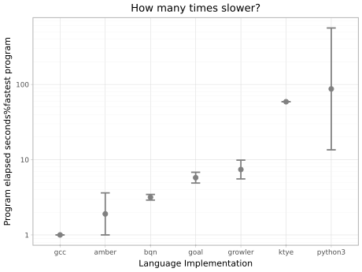

Fastest
contributed programs, grouped by programming language implementation
shamelessly borrowed from The Computer Language Benchmarks Game

| × | source | 2^ | secs | mem | gz | cpu secs |
|---|---|---|---|---|---|---|
| 1.00 | fft.c | 23 | 0.22 | 206,049 | 1,479 | 0.215 |
| 1.08 | fft.amber.k | 23 | 0.237 | 847,032 | 2,095 | 0.761 |
| 2.87 | fft.bqn | 23 | 0.63 | 692,359 | 1,041 | 0.627 |
| 3.61 | fft.deno.js | 23 | 0.794 | 356,626 | 892 | 0.806 |
| 4.64 | fft.growler.k | 23 | 1.02 | 1,111,835 | 649 | 1.02 |
| 4.89 | fft.goal | 23 | 1.07 | 1,000,313 | 919 | 1.14 |
| 13.5 | fft.py | 23 | 2.97 | 761,512 | 666 | 3.6 |
| 58.8 | fft.ktye.k | 23 | 12.9 | 928,186 | 298 | 12.9 |
| 1.00 | mandelbrot.amber.k | 13 | 0.196 | 157,811 | 611 | 0.635 |
| 2.90 | mandelbrot.bqn | 13 | 0.571 | 49,336 | 862 | 0.563 |
| 6.80 | mandelbrot.goal | 13 | 1.34 | 62,587 | 574 | 3.97 |
| 9.86 | mandelbrot.growler.k | 13 | 1.94 | 4,133 | 429 | 1.94 |
| 562. | mandelbrot.py | 13 | 111 | 13,693 | 476 | 110 |
This is the current round of the benchmarks game. See Round 2 for the last round performance.
. mandelbrot requires an x by x portable bitmap (pbm) of the mandelbrot set
. fft requires the top 10 frequencies detected in the input. input is one second of a signal and is generated with a simple prng. list a table of frequencies with tab separated frequency and amplitude up to 9 decimal places.
Reference implementations are mandelbrot.py and fft.py
Please contribute more programs for your favourite array language. There is no restriction on algorithms, unlike the CLBG.
It's never too late to add your language to this round or previous rounds or to improve any program.
Please propose interesting new benchmarks
The benchmark is run on an i5-1135g7 (tiger lake, some avx512) and each process is limited to 2GB of memory